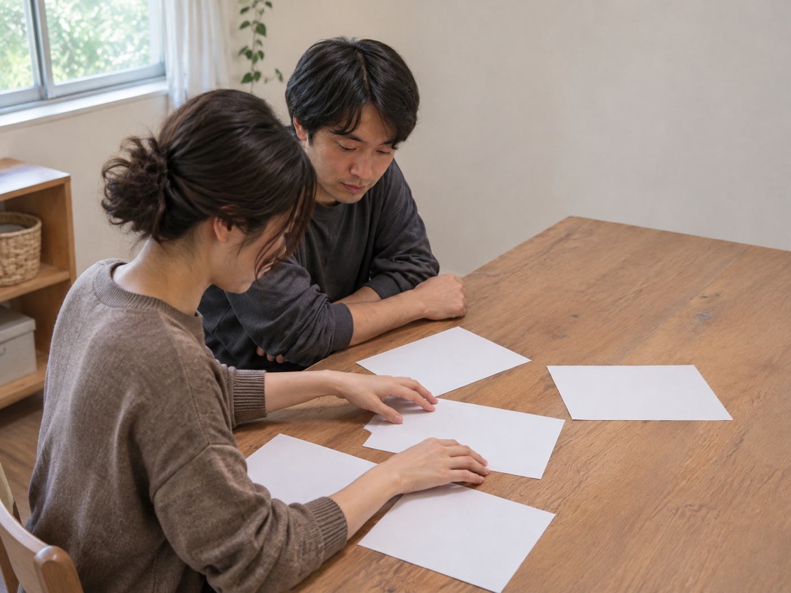
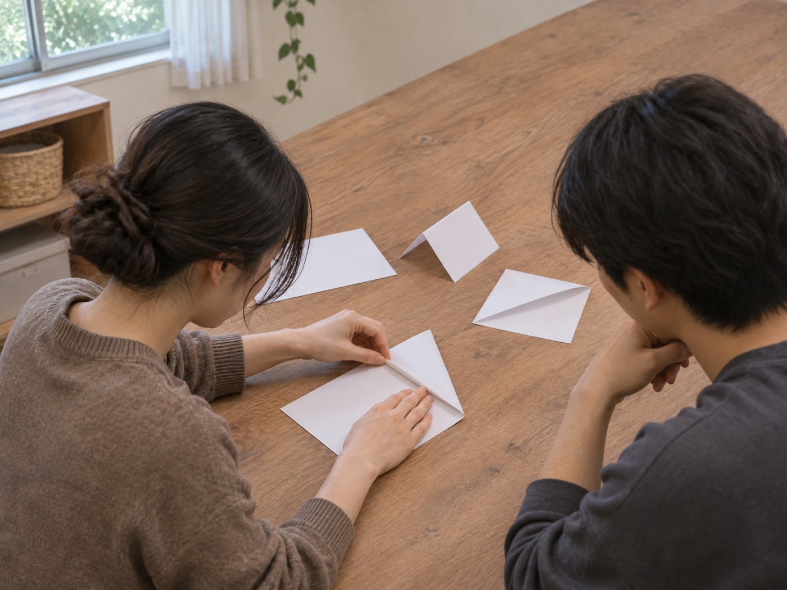
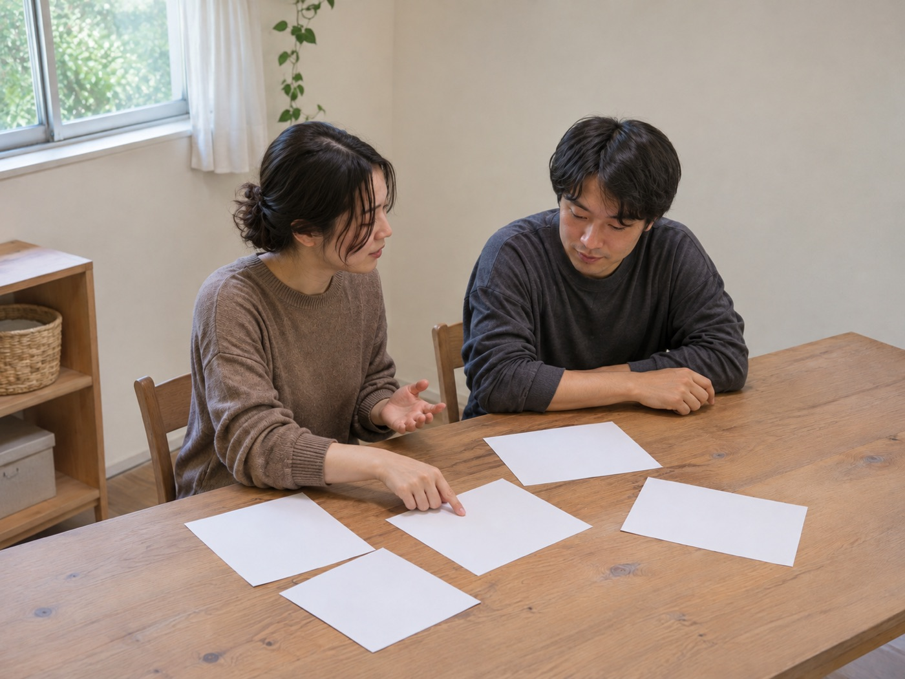
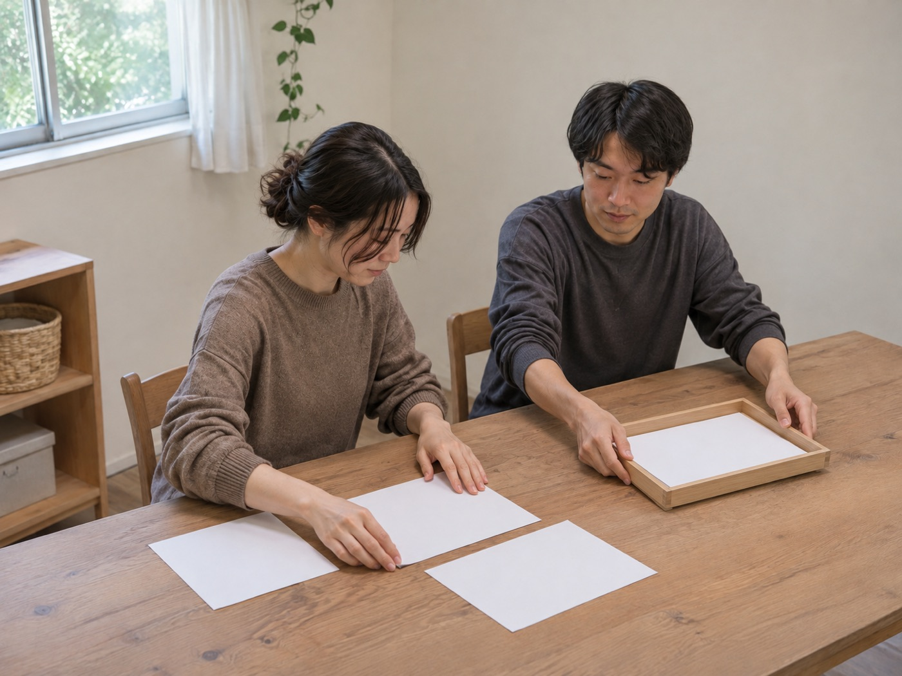

適職診断とは
適職診断でわかること。自分で確かめたいこと。
適職診断は、回答から興味や考え方の傾向を整理し、仕事選びを考えるために使うものです。
結果は、経験や希望する働き方と照らし合わせて読む
結果だけでは、仕事は決められません。この先の「仕事展」は、仕事選びを考えるためのイメージです。診断画面ではなく、採点やタイプ判定もありません。
職業名のない仕事展
なりたい仕事の名前が、まだ浮かばなくても。働く場面の、どこに目がとまるかから考えてみませんか。
適職診断は、回答をもとに興味や考え方の傾向を整理し、仕事選びの手がかりにするためのものです。
仕事選びを考えるためのイメージです。実際の診断画面・診断用画像ではありません。
適職診断とは
適職診断は、回答から興味や考え方の傾向を整理し、仕事選びを考えるために使うものです。
結果だけでは、仕事は決められません。この先の「仕事展」は、仕事選びを考えるためのイメージです。診断画面ではなく、採点やタイプ判定もありません。

展示 01 — 同じ場面
紙を動かす手元、隣にいる人、机の周りの空間。

展示 02 — つくる
無地の紙を折り、試している手元。

展示 03 — 伝える
紙を指しながら言葉を交わす途中。

展示 04 — 支える
そばで材料のトレーを寄せる途中。
気になった理由を言葉に
その場面を選んだ理由を、3つの視点から考えてみませんか。しっくりくる言葉がなければ、今はそのままでも。
しごピタの診断へ
しごピタは、40枚の画像をスワイプして回答する適職診断です。約2分・無料で試せて、結果は16タイプで示されます。
診断で気になった言葉を、ここで目にとまった場面や、これまでの経験と並べてみてください。しっくりくるところも、違うと感じるところも、次に確かめたいこととして残してみませんか。
適職診断は、回答をもとに興味や考え方の傾向を整理し、仕事選びの手がかりにするためのものです。結果だけで仕事を決めず、これまでの経験や希望する働き方と照らし合わせて使います。
はい、診断は無料で受けられます。
所要時間の目安は約2分です。文章の質問に答える形式ではなく、40枚の画像をスワイプして回答します。結果は16タイプで示されます。
いいえ。場面カードは、仕事選びを考えるための展示です。選択による採点やタイプ判定はありません。しごピタの診断は「画像で適職診断をはじめる」から進めます。
結果は仕事選びの参考情報です。気になった言葉を、これまでの経験や希望する働き方と照らし合わせてみてください。候補の仕事は、仕事内容や働く環境も調べて考えることをおすすめします。
違うと感じた言葉と、その理由を書き留めてみてください。どんな場面や条件なら納得できそうかを考える材料になります。
はい。自己分析や、今の仕事との相性を確かめる目的でも受けられます。